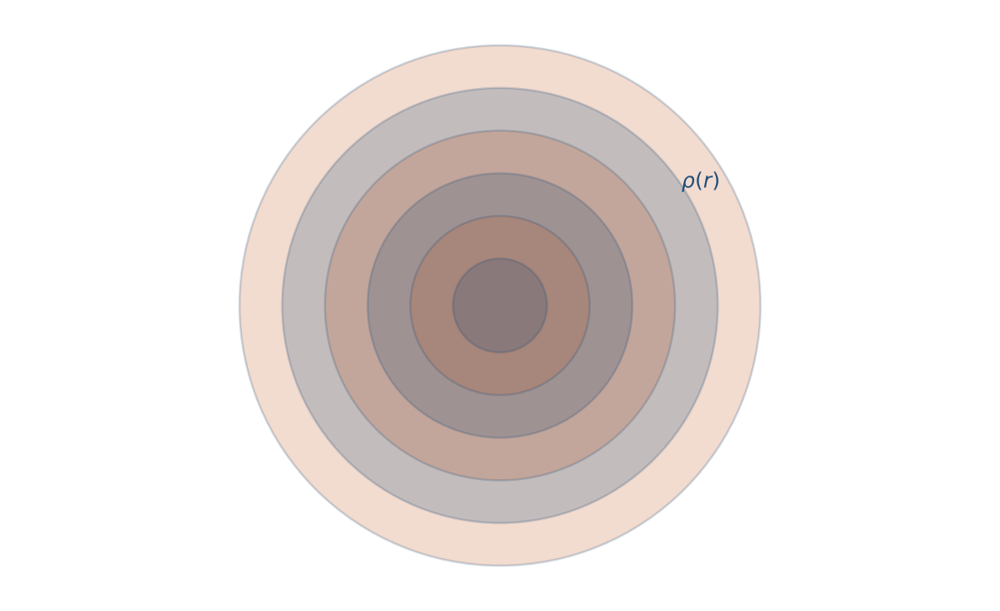
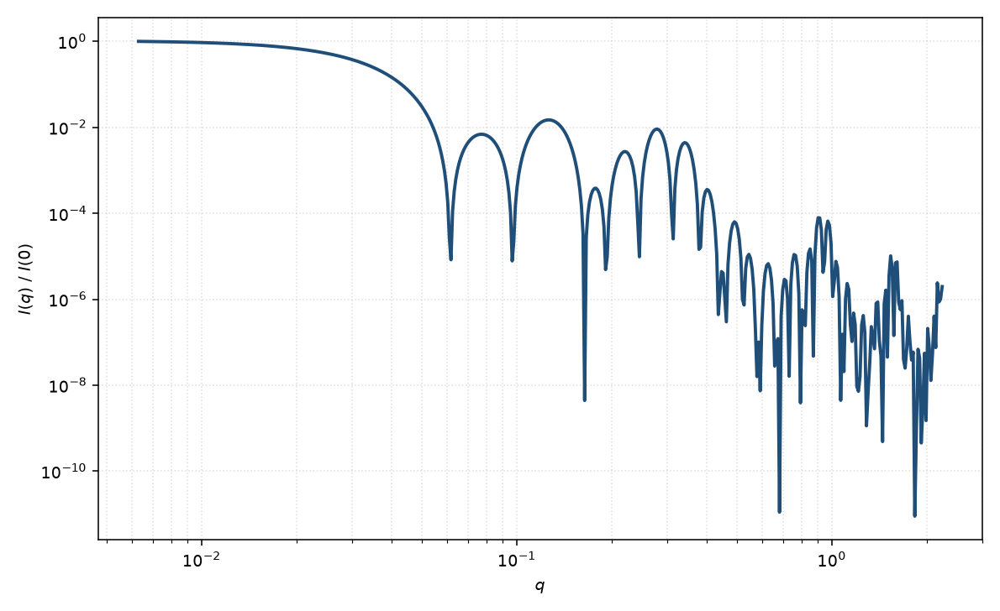

洋葱球
onion
适用场景
洋葱球描述径向多层、近似球对称的“洋葱”剖面：交替的高/低 SLD 壳，层数可以比寡层囊泡更多，且不一定对应脂质双层。适用于多层聚合物胶囊、交替沉积电解质壳、某些多层氧化物颗粒，以及想用同一套同心壳框架覆盖“看起来像洋葱”的样品。
若层是脂质膜–水交替且层数不多，多层囊泡更贴切；若剖面连续光滑，径向 SLD 球更合适。
物理图像
物理上就是多层同心球：每一径向区间一段常数 $\rho(r)$，振幅为各界面 Rayleigh 项之和。层数多时，$I(q)$ 在 $q\sim 2\pi/d$ 出现更锐的径向布拉格样峰，但因为是有限半径的闭合壳，峰宽仍受整体尺寸调制。
示意图


核心公式
$$A(q)=4\pi\int_0^{R_{\max}} r^2\,\bigl[\rho(r)-\rho_{\mathrm{solv}}\bigr]\,\frac{\sin(qr)}{qr}\,\mathrm{d}r,$$分段常数 $\rho(r)$ 时退化为与核–多层壳相同的求和。重复间距 $d$ 的周期性剖面在 $q_k=2\pi k/d$ 附近增强。
参数表
| 参数 | 符号 | 含义 | 单位 | 典型范围 |
|---|---|---|---|---|
| 外半径 | $R_{\max}$ | 最外层外半径 | Å 或 nm | 50–2000 Å |
| 层间距 | $d$ | 径向重复单元厚度 | Å | 20–200 Å |
| 层数 | $n$ | 径向重复次数 | 无量纲 | 3–30 |
| 各层 SLD | $\rho_k$ | 第 $k$ 种壳的散射长度密度 | Å$^{-2}$ | 交替高/低 |
拟合注意
周期性越强，峰越锐，但尺寸多分散与层间距涨落同样抹峰。不要把层状粉末衍射的峰宽公式直接套到有限洋葱上。层数与外半径通过 $R_{\max}\approx n d$ 耦合。
取向无关。若只有部分壳层有磁性（例如夹磁纳米片），磁 SLD 剖面与核 $\rho(r)$ 不同，必须分开建模。
相近模型
参考文献
- Pedersen, J. S. J. Appl. Cryst. 1997, 30, 339–354. DOI: 10.1107/S0021889897002532
- Guinier, A.; Fournet, G. Small-Angle Scattering of X-rays. Wiley: New York, 1955.（球对称径向傅里叶变换）